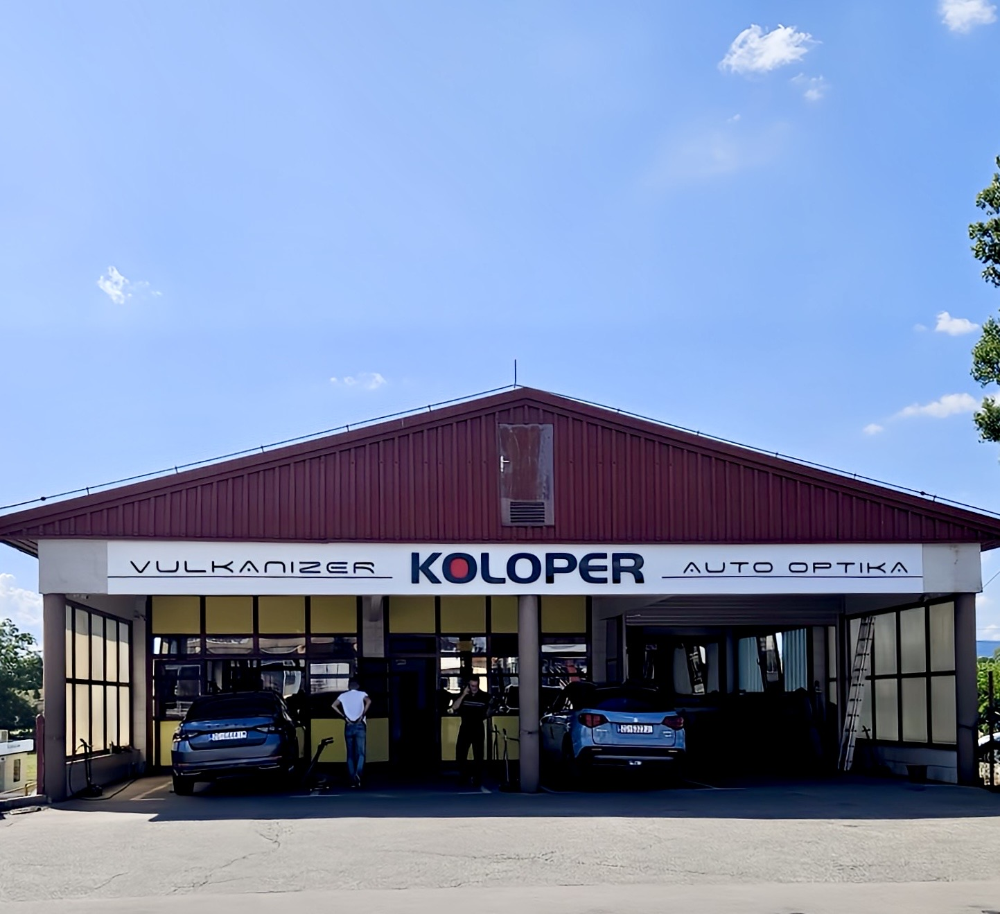
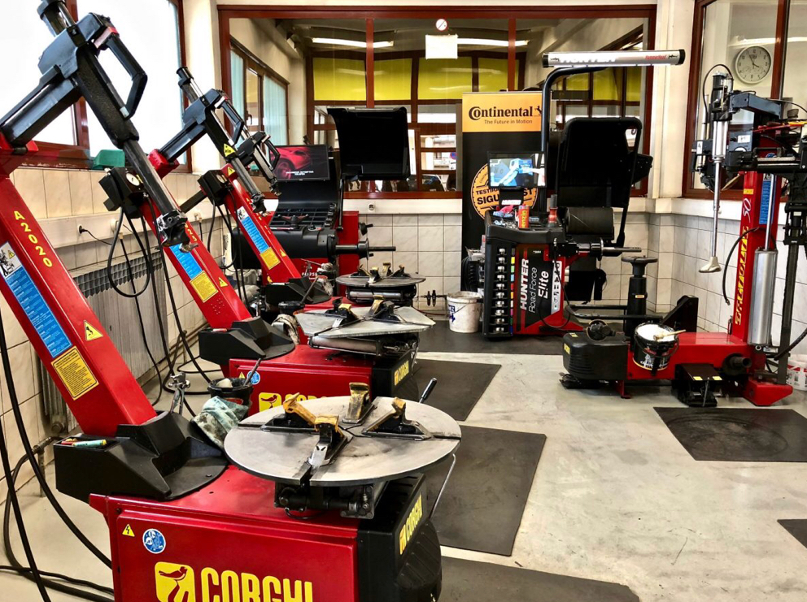

Izmjena guma i kotača
Sezonska zamjena ljetnih i zimskih guma ili cijelih kotača, uz dogovoreni termin.
Pon – pet 8 – 17 · sub 8 – 13
KOLOPER je vulkanizer i auto optika na Remetinečkoj cesti 26 u Zagrebu. Izmjena i balansiranje guma, popravak, hotel za gume i podešavanje geometrije kotača, uz dogovoreni termin i bez čekanja.

Od sezonske izmjene do točnog podešavanja geometrije. Nazovite, dogovorite termin i dovezite auto.
Sezonska zamjena ljetnih i zimskih guma ili cijelih kotača, uz dogovoreni termin.
Balansiranje kotača da vožnja bude mirna, bez podrhtavanja volana.
Krpanje probušene gume nakon čavla ili vijka, kad je guma za popravak.
Ostavite sezonske gume kod nas i ne brinite gdje ih spremiti do iduće izmjene.
Mjerenje i podešavanje kutova kotača (špur) kad auto vuče u stranu ili volan nije ravan.
Kako radiNove gume možete kupiti u radioni i odmah ih montirati. Pitajte za dimenziju koju trebate.

Radiona · Remetinečka 26Vozači nas godinama hvale zbog brzine, strpljenja i dogovora termina koji se poštuje. U radioni rade strojevi za montažu guma, balanser Hunter Road Force Elite i uređaj za geometriju Hunter.
Odabrane recenzije s Google profila radione, prenesene doslovno.
Dugogodišnja sam klijentica – najbolja usluga zamjene guma i hotela za gume – sve na vrijeme, profesionalno, odlična komunikacija.Tihana G.Google recenzija
Došao na preporuku prijatelja za špur iliti geometriju kotača. Naručili me odmah, došao, odradio i sve super. Uigrana ekipa, ljubazni, stručni i svaka preporuka.Alan J.Google recenzija
Brza i kvalitetna usluga, kao i uvijek. Prvi puta sam ovdje bio prije 20 godina (možda i više), a svaki put kad dođem uvjerim se kako su svi djelatnici susretljivi, profesionalni i strpljivi.Tomislav R.Google recenzija
Po dolasku na dogovoren termin dečki su me odmah preuzeli i odradili posao kako se spada. Konkretno, radio sam autooptiku i stvarno sam zadovoljan.Toni M.Google recenzija
Brza i profesionalna usluga. Potrebno je prethodno se naručiti, nakon čega se dobije termin i nema čekanja.Mario M.Google recenzija
Vrhunski odrađena optika kotača. Vlasnik ljubazan i stručan!Filip F.Google recenzija
Ocjena 4,9 iz 533 recenzije na Google kartama (studeni 2026.).
| Ponedjeljak | 8 – 17 |
| Utorak | 8 – 17 |
| Srijeda | 8 – 17 |
| Četvrtak | 8 – 17 |
| Petak | 8 – 17 |
| Subota | 8 – 13 |
| Nedjelja | zatvoreno |